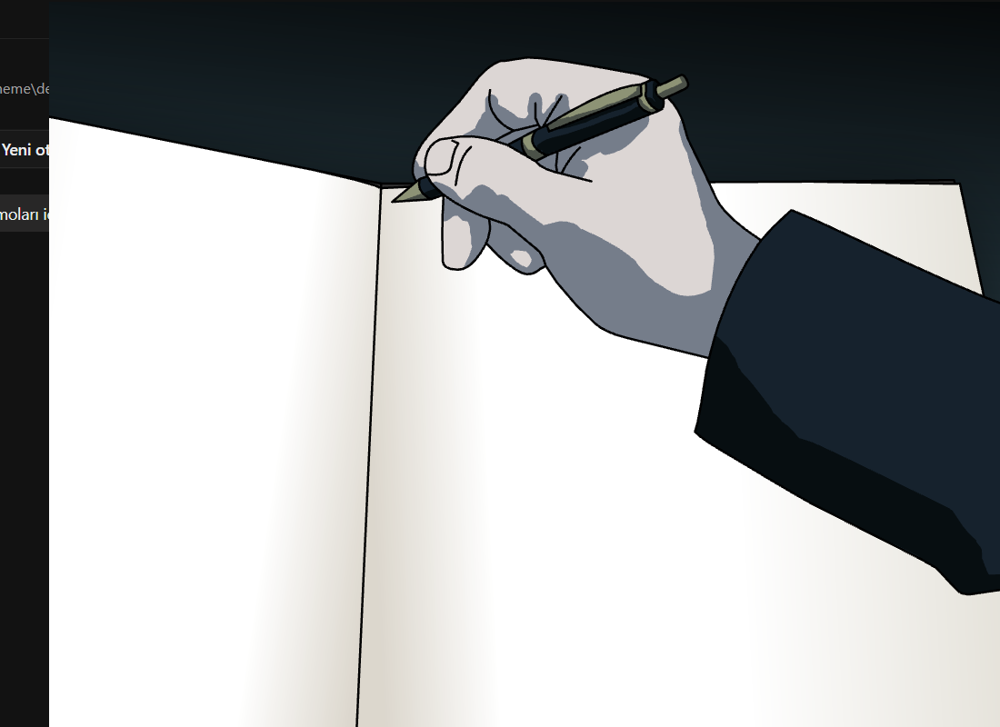
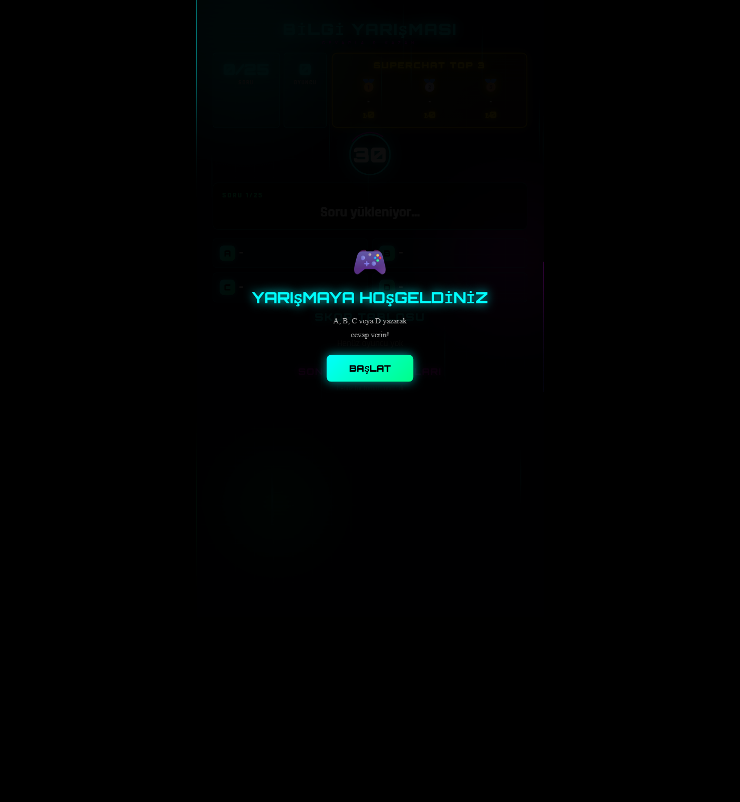

Canli yayin oyun vitrini
Yayin sohbetini oyuna ceviren koyu temali bir demo websitesi
Bu sayfa, klasordeki gercek projelerden uretilmis demo stack'i tek cati altinda sunuyor. Oyunlar; yorum hizini artiran, izleyiciyi oyuna dahil eden ve YouTube kesfetine oynayan canli yayin formatlari icin tasarlandi.
Sitedeki ana gorseller bu klasordeki gercek oyun ekranlari, runtime capture'lari ve oyunun
kendi assetlerinden uretilmistir.



Neden ise yarar
YouTube kesfetine oynayan canli yayin dongusu
Bu formatlar tek bir seyi hedefliyor: izleyicinin sadece izlemesini degil, yazmasini, secim yapmasini, rekabeti tirmandirmasini ve para harcarken ekranda anlik etki gormesini.
Yorum ve etkileşim ritmi yukselir
Takim secimi, cevap yazma, son hayatta kalan bayragi tahmin etme gibi akıslar yorum sayisini ve tekrar katilimi yukari ceker.
Izleyici ekranda sonucu bekler
Cark, puan barlari, anlik skor degisimi, zaman sayaci ve siralama ekranlari yayini pasif icerikten aktif rekabete cevirir.
Superchat ve hediyeler gorunur guce donusur
Super Chat, TikTok gift veya diger destekler puan, booster, wheel sonucu ya da oyundaki fiziksel etki olarak ekrana yansir.
Gercek demo galerisi
Klasordeki oyunlardan uretilmis vitrin
Her kartta bu klasordeki gercek oyundan alinmis runtime goruntu veya native oyun asseti yer alir.
Next.js
Superchat
Sans carki
Takimini Sohbete Yaz
Izleyici takim adini sohbete yazar, Super Chat ile puan carpani alir ve sans carkiyla turun kaderi degisir. Tam olarak parasal destegi ekrandaki rekabete baglayan format.
- Top 3 destekci paneli
- Wheel / multiplier mantigi
- YouTube chat tabanli takim rekabeti

Express
Gift akisi
Futbol Arena 3D Pro
TikTok, Twitch ve YouTube destegini ayni yapida toplayan canli yaris overlay'i. Hediyeler puan tablolarina ve takim savasina akiyor.
Next.js
Survival
FlagGame
Izleyici en son hangi bayragin kalacagini tahmin eder. Tek bakista anlasilan, izleyeni merakta tutan ve tekrar yorum alabilen temiz bir format.

Quiz
Timer
Leaderboard
Bilgi Yarismasi
Zaman sayaci, skor tablosu ve cevap akisi ile yorum tabanli quiz kurgusu. Superchat top 3 vurgusu sayesinde monetization sahneden cikmiyor.
Electron
Desktop
Typing
Death Note Live
Paketlenmis masaustu oyun. YouTube chat'ten gelen metinleri oyuna baglayan typing odakli deneyim sunuyor.

Python
Pygame
Komut tabanli etki
Falling Pickaxe
Chat komutlariyla pickaxe, TNT ve ozel olaylari tetikleyen masaustu fizik tabanli kurgu. Yayina meme, kaos ve hediye-karsiligi etkiler ekler.
Canli yayin dongusu
Izleyici aksiyonu aninda ekrana geri doner
Yazar
Takim adini, cevabi, tahmini veya komutu sohbete gonderir.
Destekler
Super Chat veya hediye ile normal yoruma gore daha guclu etki olusturur.
Gorur
Puan, wheel, leaderboard, patlama veya yeni tur sonucunu ekranda anlik izler.
Tekrar katilir
Bu dongu yorum hizini ve yayinda kalma motivasyonunu besler.
GitHub'a yukleme
Static, temiz ve direkt repo'ya atilabilir paket
Paket icerigi
Bu landing page build gerektirmeden calisir. `index.html`, `styles.css`, `script.js` ve `assets/` klasorunu bir GitHub reposuna koyman yeterli.